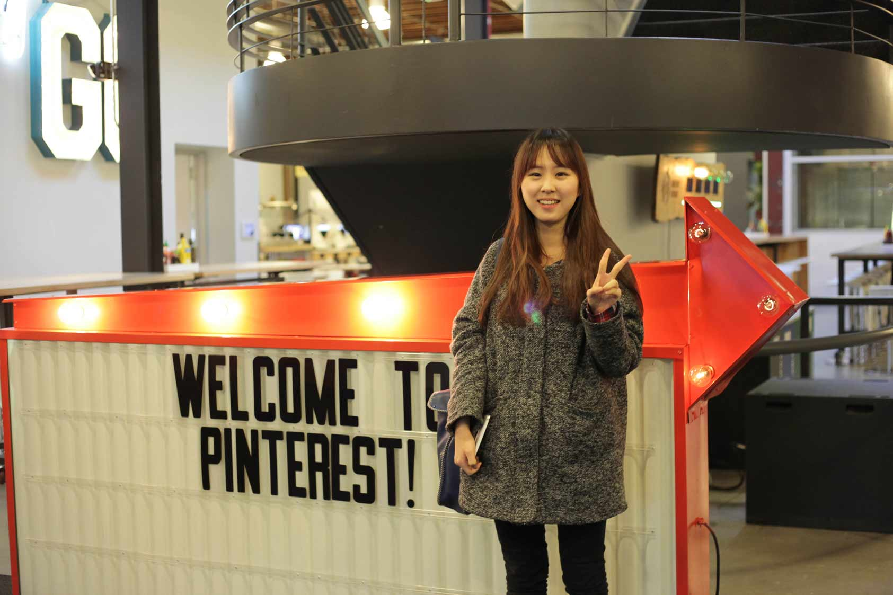
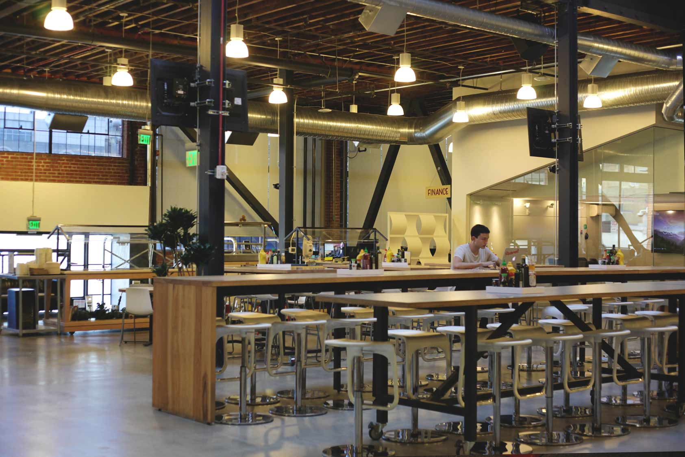
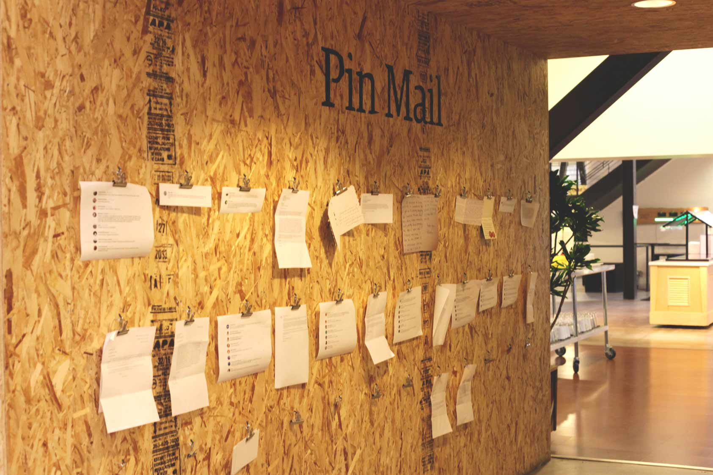
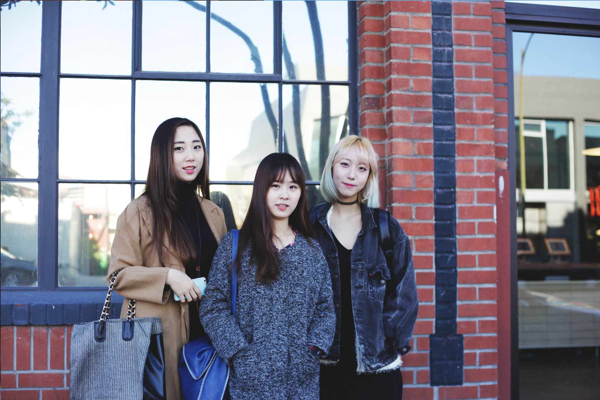

담백한 건물 바깥에 귀엽게 달려있는 ‘P’가 새겨진 둥근 간판. 이곳이 바로 많은 아티스트들에게 영감을 주는 서비스 중 하나인 Pinterest 사입니다. 서울대학교 컴퓨터공학과를 졸업하신 김주성 선배님께서 특별히 공간431팀을 위해 시간을 내주시어 회사를 둘러본 후 간단히 얘기를 나누었습니다.
안녕하세요, 공간431팀입니다. 저희가 꼭 와보고 싶었던 (특히 김수지 팀원이) 핀터레스트에 방문할 기회를 얻게 되어 매우 기뻐요! 회사에 대해서, 또 회사에서 맡은 직책에 대하여 간단한 소개 부탁드릴게요.
핀터레스트는 약 700명의 인력으로 굴러가는 작은 회사에요. 저는 여기서 Data Infrastructure 일을 하고 있습니다. 조금 덧붙여 설명드리자면, 회사 안에 많은 팀들이 있는데, 그들이 계속해서 들어오는 데이터를 통해 얻고싶어하는 각자 다른 인사이트가 있어요. 그렇게 얻은 인사이트를 가공하여 다시 사용자에게 보여줄 무언가를 창조하는 팀도 있고요. 저는 그런 내부의 데이터사용자들을 위한 시스템, 플랫폼, 그리고 관련 툴을 만드는 일을 하고 있습니다.
Pinterest의 분위기는 어떤가요?
저희 회사가 말씀드렸다시피 큰 회사가 아니라 한 명 한 명이 매우 중요해요. 저희 회사는 그 한 명 한 명이 모두 회사의 목표를 잘 이해하고, 그것에 기여를 해야 저희가 설정한 목표를 달성할 수 있거든요. 모두가 항상 좋아하는 것만 할 수는 없지만, 모두가 자신이 해야하는 일에 대해 잘 이해하고 있으며 이를 기반으로 효율적인 커뮤니케이션을 통해 업무를 수행하고 있어요. 복지도 매우 좋아요~ 휴가가 무제한이에요. (웃음) 무제한이라기보다는 시스템이 따로 관리하지 않고, 개개인의 결정에 맡기는 것이죠.
어떤 과정을 통해 Pinterest까지 오시게 되었는지 듣고싶어요!
저는 서울대학교 컴퓨터공학과를 졸업했고, 스탠포드 대학원에서 Computer Science 석사과정을 밟았어요. 원래 박사과정까지 공부하고 싶었는데, 석사하면서 연구해보니 잘 안맞더라고요. 저는 좀 더 제품에 가까운, 곧바로 쓸 수 있는 것들을 개발하는데에 더 관심이 있었어요. 그래서 저는 2009년 7월부터 오라클이라는 회사에서 재직하다가, 2014년 5월에 핀터레스트로 오게 됐어요.
Pinterest로 옮긴 이유는 무엇이었나요?
저는 End User가 있는 Consumer Product를 하고 싶었어요. 오라클도 좋았지만, 한 회사에 오래 다니면 하던 것만 하게 되어서 관성이 생기는데, 변화를 주고 싶기도 했고요.
지금 돌이켜볼 때 학부생때 하지 못해 후회하는 것이 있나요?
조금 오래 전 일이긴 하지만, 더욱 다양한 수업을 듣지 못했던 점이 아쉬운 것 같아요. 너무 일찍부터 무언가 하나를 정해놓고 그것만 바라보고 달려간 느낌. 다시 돌아갈 수 있다면 조금 더 넓게 생각해 볼 시간을 가졌을 것 같아요.
공간 431 팀은 개인적인 꿈과 목표에 대하여 선배님께 말씀드리고, 저희가 느끼는 압박과 가지고있던 고민들에 대해 털어놓았습니다.
여러분의 진로에 대해 망할까봐 걱정마세요. 혹시나 망하면 다른거 하면 됩니다. 설사 망하더라도 배우는게 많으니까. 한 번쯤 망해봐도 괜찮을 것 같습니다. 그리고 어떤 분야든 처음 보면 흥미로워 보일지라도 점점 발을 담구면 어려워지기 마련입니다. 충분히 생각해보시고 고민해보시길 바랍니다.
한국에 돌아가고 싶은 생각이 있으신가요?
네, 당연히 있죠. 한국도 되게 재미있는 곳이라 생각해요. 한국에 돌아가게 되면 꼭 제 사업을 해보고 싶습니다.
